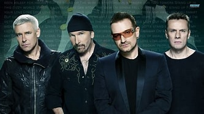

U2
Banda irlandesa de rock alternativo formada en 1976 en Dublín

Integrantes del grupo
Bono (Paul David Hewson)
The Edge (David Howell Evans)
Adam Clayton
Larry Mullen Jr
Discografía
Grandes exitos de U2
Año
Disco
"The Joshua Tree" fue el album mas exitoso.
1987
Where the Streets Have No Name
1988
Running to Stand Still
1987
With or Without You
Sitio web oficial
www.u2.com